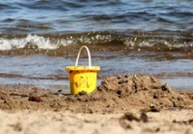

The Dolphin Coast offers visitors a combination of modern facilities at its sun-drenched seaside resorts in a lush, subtropical environment. The Dolphin Coast shoreline is an exciting blend of golden beaches and rock pools for safe bathing, surfing and scuba-diving, rock and ski boat fishing, or just relaxing on the beach.
Did you know? The Dolphin Coast refers to the Northern Coast of KwaZulu-Natal and is so named for the schools of Bottlenose dolphins that leap out of the warm waters of the Indian Ocean, to the delight of spectators. This is a prime holiday hotspot for its undeniable beauty and almost year-round tropical climate.At Willard Beach, the main swimming beach in Ballito, a 2,4 km boardwalk follows the shoreline southwards providing an opportunity for an easy stroll with spectacular views of bays and coves.
For more information, e-mail: dolphincoast@gmail.com